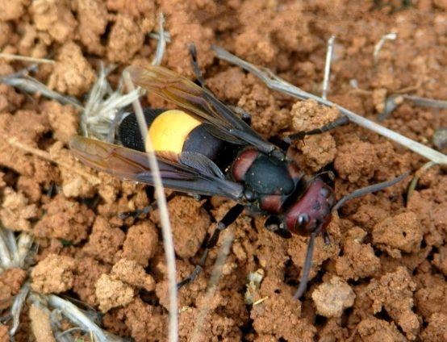

बड़ा ततैयाGreater Banded Hornet
Vespa tropica · Vespidae · INS-0049

- Scientific name
- Vespa tropica (Linnaeus, 1758)
- Family
- Vespidae
- Hindi
- बड़ा ततैया
- Status here
- native
- IUCN
- not evaluated
When to look कब देखें
Expected mainly in March, April, May, June, July, August, September, October, November.
बड़ा ततैया / Greater Banded Hornet
Vespa tropica (Linnaeus, 1758) — Vespidae
बड़ा ततैया (महाभीम ततैया / पीली पट्टी वाला ततैया) — पूर्वी उत्तर प्रदेश के ग्रामीण क्षेत्रों, पुराने बागों और खंडहर इमारतों में पाया जाने वाला एक बहुत बड़ा, सामाजिक और शिकारी ततैया (social wasp/hornet) है। यह इस क्षेत्र का सबसे बड़ा ततैया है, जिसकी लंबाई 25-30 मिमी होती है। इसकी सबसे बड़ी पहचान इसका चमकीला काला शरीर है जिसके पेट के दूसरे खंड (second abdominal segment) पर एक चौड़ी नारंगी-पीली पट्टी (distinctive yellow/orange band) बनी होती है, जबकि बाकी का पेट पूरी तरह से काला होता है। यह एक आक्रामक शिकारी कीट है, जो अपनी इल्लियों (larvae) को खिलाने के लिए शहद की मक्खियों, छोटी ततैयों और अन्य कीड़ों का शिकार करता है। यह पेड़ के कोटरों या पुरानी इमारतों में चबाए गए लकड़ी के रेशों (paper-like nest) से एक विशाल छत्ता बनाता है। हालांकि इसका डंक दर्दनाक होता है, लेकिन यह बिना उकसावे के हमला नहीं करता।
Quick Identification त्वरित पहचान
| Feature | Description |
|---|---|
| Size | Very large; worker is 24–28 mm long, queen up to 30–35 mm (largest common hornet in UP) |
| Colouration | Head and thorax are blackish-red; abdomen is jet-black with a single, broad orange-yellow band on the second segment |
| Wings | Dark reddish-brown, semi-translucent wings with a copper-bronze shine in flight |
| Nest | Builds large, spherical or bell-shaped nests made of paper-like chewed wood, usually hidden in cavities |
| Stinger | Long, smooth stinger in females/workers; can sting repeatedly without dying (lacks barbs) |
Field tip: Look near mature trees or old brick buildings. Watch for a very large, heavy-bodied black-and-orange wasp flying with a deep, loud buzzing sound. You will notice its single bright orange abdominal band as it flies. They are often seen searching around honeybee hives. The worker is shown in the field tip.
Morphology आकारिकी
Biometrics (typical measurements of different castes in the northern Indian plains):
| Caste / Part | Worker | Queen | Drone |
|---|---|---|---|
| Body length | 24–28 mm | 30–35 mm | 26–30 mm |
| Wingspan | 50–60 mm | 60–70 mm | 52–62 mm |
| Head width | 7.0–8.0 mm | 8.5–9.5 mm | 7.2–8.2 mm |
| Weight | 1.0–1.4 g | 1.8–2.5 g | 1.2–1.6 g |
Caste structure and morphology:
- Worker (Females): The head is dark reddish-brown, and the eyes are large. The thorax is black-brown. The first segment of the abdomen is black, the second is entirely bright orange-yellow (the diagnostic band), and the remaining segments are jet-black. The mandibles are large and strong, adapted for chewing wood and tearing apart prey.
- Queen: Morphologically similar to the worker but significantly larger, possessing developed ovaries and a larger head.
- Drone (Males): Similar in size to workers but have 13-segmented antennae (workers have 12) and 7 abdominal segments (workers have 6). They lack a stinger.
Larva: Plump, white, legless grub, residing inside the individual paper comb cells of the nest, fed on insect meat paste.
Behaviour & Ecology व्यवहार और पारिस्थितिकी
- Eusocial colony: Lives in colonies consisting of a single founding queen and several dozen to hundreds of workers. They cooperate in nest building, larval care, and defense.
- Predatory behavior: The adults are predators. They hunt other social insects, particularly honeybees (such as the Dwarf Honey Bee Apis florea) and paper wasps. They capture the prey, bite off the head and wings, chew the thorax into a soft meat paste (bolus), and carry it back to the nest to feed the legless larvae.
- Trophic relationship: Adults cannot digest solid protein. The larvae digest the meat paste and secrete a sweet, amino-acid-rich liquid from their mouths, which the adult hornets drink (trophallaxis).
- Paper Nesting: Collects fibers from weather-worn wood, mixes them with saliva, and chews them into a paste. They apply this paste in layers, which dries into a grey, paper-like envelope surrounding the combs.
Life Cycle / Phenology जीवन चक्र
- Reproduction: Annual colony cycle. In early spring (March), a fertilized queen emerges from winter hibernation and starts a new nest, rearing the first batch of workers.
- Colony growth: By monsoon (July–August), the worker population peaks, and the colony produces reproductive males (drones) and new queens.
- Dissolution: In late autumn (November), the colony dissolves, the old queen and workers die, and the fertilized young queens find safe spots under bark or soil to hibernate through the winter.
Host Plants or Prey आहार
Primary prey species:
- Honeybees: Dwarf Honey Bee (Apis florea, INS-0038, already in atlas), Asian Honey Bee (Apis cerana), and European Honey Bee (Apis mellifera).
- Other wasps: Paper wasps (Polistes species) and mud daubers.
Adult carbohydrates:
- Sweet secretions from ripe mangoes, sap from tree bark wounds, and larval salivary secretions.
Predators / Natural Enemies शत्रु
- Birds: Large insectivorous birds (like the Crested Honey Buzzard Pernis ptilorhynchus) specialize in raiding hornet nests, possessing dense feathers around the eyes to protect them from stings.
- Mammals: Honey Badgers (Mellivora capensis) or jackals may dig up subterranean nests if they are close to the ground.
Agricultural / Human Relevance कृषि प्रासंगिकता
Natural insect regulator. While they are a threat to commercial beekeepers (as a few hornets can destroy honeybee hives), Greater Banded Hornets play an important role in the forest ecosystem. They help control populations of crop pests and wild wasps, maintaining a balance in the insect community.
Sting safety (No venom alarmism): The sting of Vespa tropica is painful due to acetylcholine and histamine toxins, and can cause local swelling. However, they are not aggressive when foraging and only attack if their nest is directly disturbed or threatened. If stung, local application of ice and antihistamine cream is recommended.
Expected Locally स्थानीय रूप से अपेक्षित
Not a field record. Written from published accounts for eastern Uttar Pradesh. No confirmed local sighting yet — if you have seen it, that is what the atlas needs.
अभी तक स्थानीय पुष्टि नहीं। यह विवरण प्रकाशित स्रोतों से है, किसी अवलोकन से नहीं।
A common resident throughout the Basti district. They are regularly observed in mango orchards and near old brick houses in the Harraiya, Basti, and Vikramjot blocks. Their large, paper-bag-like nests are often found built inside hollow trunks of mature mango trees or hanging from quiet rafters in village cowsheds.
Distribution वितरण
Global range: Widespread across South Asia, Southeast Asia, and parts of East Asia.
In India: Common throughout all plains and forested zones.
In Uttar Pradesh: A common resident state-wide in all rural and suburban districts.
In Basti district / eastern UP: Regularly recorded year-round (except during winter hibernation) in all blocks.
Research Questions शोध प्रश्न
Anyone can investigate these | कोई भी इन प्रश्नों की जाँच कर सकता है
- How many honeybees does a single foraging hornet capture per hour near a wild Dwarf Honey Bee nest in Basti? — Monitor and record hunting success rates.
- What is the preference of hornets for nesting inside hollow tree trunks versus concrete roof corners? / बड़ा ततैया बस्ती के गांवों में घोंसला बनाने के लिए पेड़ों के कोटरों और कंक्रीट के छज्जों में से किसे अधिक प्राथमिकता देता है? — Survey nest distributions.
- What is the average worker population inside a mature nest of the Greater Banded Hornet in September? — Safely estimate colony sizes from a distance.
- How do honeybees defend their hive entrance when a Greater Banded Hornet hovers nearby? — Document bee defense behaviors (e.g. balling or heat-balling).
- Does the chemical composition of the hornet's paper nest differ when built near mango orchards versus village structures? / क्या आम के बगीचों और ग्रामीण घरों के पास बने ततैया के छत्ते की सामग्री (material) में कोई अंतर होता है? — Analyze nest textures and fiber sources.
Similar Species मिलती-जुलती प्रजातियाँ
| Species | How to tell apart | comparison |
|---|---|---|
| Asian Giant Hornet (Vespa mandarinia) | Much larger (45–50 mm); entirely orange head; not found in the UP plains (restricted to mountains) | एशियाई भीम ततैया — विशाल आकार, नारंगी सिर |
| Yellow Paper Wasp (Polistes olivaceus) | Much smaller (15–20 mm); body is entirely olive-yellow; slender build; nests in small open combs | पीला ततैया — छोटा आकार, पूरी तरह पीला शरीर |
| Lesser Banded Hornet (Vespa affinis) | Smaller (20–22 mm); has first two abdominal segments yellow-orange; nests are larger, hanging openly | छोटा ततैया — छोटा आकार, दो नारंगी पट्टियाँ |
Field rule: Very large hornet (25–35 mm) with a black body, a single broad orange-yellow band on the second abdominal segment, hunting bees and nesting in cavities, is the Greater Banded Hornet.
Taxonomy & Classification वर्गीकरण
Original description. Carl Linnaeus described the Greater Banded Hornet as Sphex tropica in 1758 in his Systema Naturae (ed. 10, vol. 1, p. 571). The type locality was the Indies. Linnaeus later established the genus Vespa. The genus name Vespa is Latin for a wasp. The specific name tropica is Latin for tropical, referencing its warm climate distribution.
Subspecies. Several subspecies are recognized. The subspecies resident in northern India and UP is:
| Subspecies | Authority | Range | Notes |
|---|---|---|---|
| V. t. haematodes | Bequaert, 1936 | India, Nepal, parts of Southeast Asia | UP subspecies; characterized by its dark reddish-brown markings on the head and thorax |
Family and order placement. Placed in the order Hymenoptera, suborder Apocrita, family Vespidae (wasps and hornets), subfamily Vespinae.
Phylogenetic notes. Vespa tropica belongs to a primitive lineage within the genus Vespa, genetically adapted to humid tropical climates compared to temperate hornets.
IUCN status rationale. Not evaluated (NE) by the IUCN Red List. It has a secure population and is common throughout its range.
Photo Gallery फोटो गैलरी
References संदर्भ
- Linnaeus, C. (1758). Systema Naturae. Tenth Edition. Holmiae, p. 571. [original description]
- Atwal, A. S. & Dhaliwal, G. S. (2015). Agricultural Pests of South Asia and Their Management. Kalyani Publishers, New Delhi.
- David, B. V. & Ramamurthy, V. V. (2016). Elements of Economic Entomology. Namrutha Publications, Chennai.
- Archer, M. E. (2012). Pensoft Series Faunistica No 99: Vespine Wasps of the World. Pensoft Publishers, Sofia.
- Vespidae of the World Database (2024). Vespa tropica species page.
- GBIF Occurrence Data — Vespa tropica, Uttar Pradesh (2010–2025).
Source file: species/fauna/insects/greater_banded_hornet.md